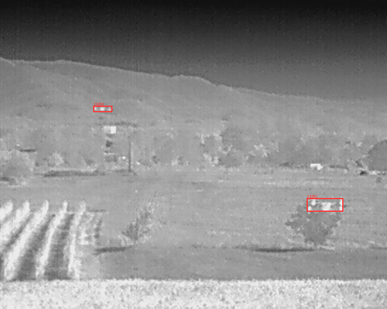
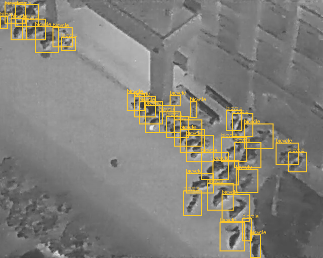

結論前置：本案的軟體技術鏈(七站：資料蒐集→轉換→訓練→ONNX 匯出→量化編譯→後處理→部署)已在純 CPU 開發機上逐站打通，並用 Kneron 官方預訓練 YOLOX-s 權重把風險最高的「量化編譯」段走完。
關鍵成果(來源：session-walkthrough §5–6、small-object-fps-tradeoff §3)：KL730 INT8 模擬 43.2 fps(YOLOX-s 640×640)、零 CPU fallback、NEF 模型檔 9.4MB；量化退化問題已透過七輪對照實驗定位根因並修正(逐 channel 相關性 0.90–0.97 通過)。
尚未完成項目：正式 4 類熱影像模型訓練(待雲端 GPU / Kaggle)、實體 KL730 上板驗證、熱像儀實機整合。目前端到端 demo 以 COCO 預訓練權重驗證，因 domain gap(地面可見光 vs 空中熱影像)偵測弱 —— 此結果反向佐證熱影像 fine-tune 的必要。
主要待決策 / 風險：偵測距離需求尚未定義(直接影響輸入尺寸與 head 取捨)、Boson ≥9Hz 出口管制(EAR 6A003.b.4.b)、KL730 板工業溫度版本未確認。
一句話：把現成的 YOLOX-s 演算法與現成的 Kneron KL730 邊緣 AI 晶片，透過熱影像資料與量化部署流程整合成一條能在無人機上即時運作的鏈路。
本案不研發新演算法、不設計新晶片。整合工作的價值與難點，集中在四個交界處：演算法↔NPU 量化相容性、熱影像↔模型輸入格式、多資料集↔統一訓練 schema、機載硬體↔飛控環境。下圖為整合架構的角色分工。
場景:無人機在空中自主辨識「天上的其他無人機」與「地面的人 / 車」,且在機上當場運算,不回傳地面再分析。常見於反無人機、廠區與邊境巡邏、搜救、空中監看。三個設計約束來自「無人機」場景本身:
| 項目 | 內容 |
|---|---|
| 輸入 | 無人機熱像儀即時畫面(8-bit 灰階,複製為 3 通道) |
| 輸出 | 每個目標的框 + 類別 + 信心,類別為 uav / person / vehicle / bicycle |
| 運算位置 | 無人機機上 Kneron KL730 |
| 限制 | 低功耗(瓦級)、輕(酬載估 170–290g)、即時(目標 ≥25 fps) |
物件偵測採 YOLO(single-stage,整張影像一次前向回歸出所有框 + 類別,不需先產候選區域),內部分 backbone(特徵抽取)→ neck(多尺度融合,輸出 P3/P4/P5,stride 8/16/32)→ head(各尺度預測框與類別,推論後 NMS 去重)。
「版本能動越新越好」的務實解讀:新版本的價值要以「能在 KL730 上正確量化執行」為前提。下表為版本與授權 / NPU 相容性的整合評估。
| 版本 | 關鍵差異 | 授權 | KL730 量化相容性 |
|---|---|---|---|
| YOLOv5 | anchor-based, CSP | AGPL-3.0 | 官方全流程支援,但商用需 Ultralytics 企業授權 |
| YOLOX | anchor-free, decoupled head | Apache-2.0 | Kneron 官方 step-by-step 流程驗證;授權乾淨 |
| YOLOv8 | anchor-free, C2f | AGPL-3.0 | 無官方 KL730 範例,需自改 operator |
| YOLOv9 | PGI + GELAN | GPL-3.0 | 無商業授權管道,不建議 |
| YOLOv10 | NMS-free (dual assignment) | AGPL-3.0 | export graph 含 TopK 子圖,各家 NPU 量化均踩雷 |
| YOLO11 | C3k2 | AGPL-3.0 | 論壇實測:模擬正確但量化編 NEF 後輸出全 0,未解 |
| YOLO26 | edge-first、原生 NMS-free | AGPL-3.0 | 架構方向契合 edge,但 Kneron 轉換案例未查證,僅列 PoC |
kneron-mmdetection 官方流程已驗證、授權可商用、anchor-free decoupled head 對量化友善。新版 YOLO 的 NMS-free head(TopK 子圖)是跨平台 NPU 地雷;Ultralytics 全系列為 AGPL,商用需付費。新版 YOLO PoC 支線取消。
mean=128/std=256,皆為 NPU 友善修改。| KL730 | KL720 | KL630 | |
|---|---|---|---|
| 算力 | 3.6 eTOPS INT8 | 1.4 TOPS | 0.5 eTOPS INT8 |
| CPU | Quad Cortex-A55(獨立 Linux) | Cortex-M4(需 host) | Cortex-A5 |
| YOLOv5s 640 模擬 fps | 51.8 | 25.4 | 16.8 |
| 影像 | 8MP@90fps、4K60、進階 ISP、MIPI 直入 | 4K | 5M@30fps |
選 KL730 的整合理由:① A55 可獨立跑 Linux,免再帶 RPi/CM4 host,省重量 / 功耗 / 整合複雜度;② YOLO 類吞吐約為 KL720 的 2 倍,留有 P2 head / 高解析輸入餘裕;③ MIPI CSI 直入 + 內建 ISP,熱像儀可直接接(官方 BSP 有 MIPI 驅動先例);④ 唯一支援 Transformer、toolchain 重點維護世代。
整合鏈分「訓練世界(PC / 雲端 GPU)」與「部署世界(KL730)」,橋樑是 ONNX 通用格式。下圖為七站流程,標示目前進度。
機上 pipeline 的模組依 deep module 原則設計,介面窄、內部藏複雜度:
decode 與 NMS(含 NPU 不擅長的運算)交給 A55 CPU。Kneron 官方 YOLO 部署慣例:多 scale 輸出不要 concat、class score 與 bbox 分開輸出、sigmoid/exp 保留在模型內。| Boson 640(建議) | Lepton 3.5(驗證線) | Hadron 640R | |
|---|---|---|---|
| 解析度 / 幀率 | 640×512 @60Hz(或 8.6Hz 出口版) | 160×120 @8.7Hz | 640×512 @60Hz + EO |
| 介面 | CMOS/BT656、USB3;MIPI optional | VoSPI(非標準視訊) | 原生 MIPI + USB3 |
| 重量 / 功耗 | 機身 7.5g / ~0.5W | 0.9g / 0.14W | 56g / <1.8W |
| 價格(USD) | ~3,558(GroupGets) | ~164 | ~3,992 |
| 出口管制 | ≥9Hz 落 EAR 6A003.b.4.b 需許可 | 8.7Hz 多數國家免許可 | 同 Boson |
整合建議:開發期用 Lepton 3.5 + KNEO Pi 先打通全 pipeline(~US$700 全套),同步採購 Boson;原型採 Boson 640,接法以 USB-UVC 進 KNEO Pi 為第一版(風險最低),MIPI bridge(BT656→MIPI)為延遲優化選項。160×120 的 Lepton 對遠距小目標解析度不足,只當 pipeline 驗證,不作偵測距離評估。
飛控整合:KL730 UART → 飛控 TELEM2(PX4/ArduPilot 標準 companion 接法),MAVLink custom message 上報類別 / box / 置信度 / track id;Ethernet → RTSP H.264(帶 overlay)走圖傳,供地面人工確認。Boson 操作溫度 -40~80°C、耐衝擊 1500g@0.4ms,環境規格足夠;瓶頸在 KNEO Pi 板級 0–50°C。
| ThermalUAV2UAV (TU2U) | HIT-UAV | Anti-UAV410 | |
|---|---|---|---|
| 規模 | 3,856 張 | 2,898 張(24,899 框) | 410 段 TIR 影片(抽幀) |
| 視角 | 空對空(拍 UAV) | 空對地(飛高 60–130m) | 地對空(擴充 UAV) |
| 解析度 | 640×512 | 640×512 | 1080p |
| 授權 | MIT | CC BY 4.0 | repo 標 MIT(無 LICENSE 檔,僅內部研究) |
| 對應任務 | 空對空偵測 UAV(核心) | 空對地偵測車 / 人 | tiny target 與雜訊背景擴充 |
uav / person / vehicle(car+truck+bus+other)/ bicycle。合併後 train 25,459 張 / 40,970 框。三個來源格式不同(TU2U 為 YOLO txt、HIT-UAV 為偽 COCO、Anti-UAV410 為 tracking json),轉檔期就統一為同一份 4 類 COCO schema,不留到訓練期。Anti-UAV410 以 stride 抽幀避免相鄰幀灌水。
| 類別 | 框數 | 占比 |
|---|---|---|
uav | 23,452 | 57.2% |
person | 8,533 | 20.8% |
vehicle | 5,355 | 13.1% |
bicycle | 3,630 | 8.9% |


用合併 train set(25,459 張 / 40,970 框)量化目標尺寸分布。物件像素尺寸 = √(w×h),native 像素,COCO 慣例分桶 tiny<16 / small16-32 / medium32-96 / large>96。
| 類別 | 框數 | 中位 | p10 | p90 | tiny<16 | small16-32 | med32-96 | large>96 |
|---|---|---|---|---|---|---|---|---|
uav | 23,452 | 32px | 10 | 55 | 22% | 29% | 48% | 2% |
person | 8,533 | 15px | 11 | 22 | 58% | 42% | 0% | 0% |
vehicle | 5,355 | 47px | 23 | 85 | 3% | 21% | 72% | 5% |
bicycle | 3,630 | 27px | 16 | 46 | 9% | 58% | 33% | 0% |
核心發現:UAV 50.9% 目標 <32px、22% <16px;person 58% <16px。多數目標都很小,並非邊角案例,小目標能力直接決定系統可用性。YOLOX P3(stride-8)可靠分辨下限約 16–24px,<16px 目標落在下限以下易漏。對策:① 提高輸入解析度;② 加 P2 head(stride-4,下限 ~8px);③ tiling 切片。
| 輸入尺寸 | KL730 fps | CPU fallback | 16px native 放大至 | 評語 |
|---|---|---|---|---|
| 640×640 | 43.2 | 0 | ~16px | 最快,但漏 <16px 小目標 |
| 896×896 | 21.3 | 0 | ~22px | 平衡點:近即時,小目標進入 P3 可靠區 |
| 1280×1280 | 10.1 | 0 | ~32px | 小目標最佳,但跌破 25fps 即時線 |
| 640 + P2 head | ~25–30(估算) | 待驗 | P2 下限 ~8px | 不放大全圖、只補小目標頭,最佳 CP 候選 |
部署橋樑:PyTorch 權重 → ONNX(opset 11,--skip-postprocess = 只到 raw 輸出)→ Kneron toolchain(kneronnxopt 優化 → IP evaluator 估 fps / 抓 CPU node → INT8 PTQ 量化 → 編譯)→ NEF。ONNX 結構為 input 1×3×640×640、9 個分開的輸出(3 尺度 × cls/reg/obj),符合官方「不要 concat」慣例。
根因(2026-06-12 經七輪對照實驗確認,已解決):raw-logit 輸出量化必須用 mmse range method,不可用預設 percentage=1.0。
--skip-postprocess 匯出的是無 sigmoid 的 raw logits(cls 範圍 −15~+1)。percentage=1.0 會把量化範圍張到含 −15 離群值 → INT8 的 256 格攤在 ~16 寬範圍 → 多數實際值擠進同一格 → 整面常數崩潰(每 channel 只剩 1 個唯一值)。改用 mmse(SNR-based,對離群值穩健)一個變因即完全修復,逐 channel 相關性回到 0.90–0.97,無需動位寬、無需重 export、無需 mix 模式。
# conversion 量化關鍵設定(已修正並設為預設)
ktc.ModelConfig(..., platform="730")
.quantize(
datapath_range_method="mmse", # 關鍵:非 percentage=1.0
# 校正集 NCHW + batch,前處理 x/256 - 0.5
)
# 內建驗收:逐 channel float vs NEF 相關性 + 崩潰 channel 計數nef / nef-zoo 已預設 mmse,正式模型走同一條路即可。量化解決後補上後處理,寫 firmware/detect/postprocess.py(YOLOX decode + NMS,純 numpy,板上跑 A55),用 zoo NEF(COCO 80 類)跑 6 張真實 HIT-UAV 空對地熱影像,decode、畫框、存 PNG。
| 輸入 | 偵測框 |
|---|---|
| 6 張 HIT-UAV(實際含多個人 / 車) | 共 3 框、全錯類(2 個 "bird"、1 個 cls55),零個 person / vehicle |
這是預期結果,也是教學重點:
① pipeline 完全可運作 —— 6 張全跑完、decode 出框、畫圖存檔,證明站 5(量化)→站 6(後處理)鏈通。
② 偵測弱屬正常 —— COCO 是「地面、可見光」訓練,餵「空中、熱影像」domain gap 大,只能把熱斑猜成 bird。這正說明熱影像 fine-tune 的必要(即 Kaggle 訓練那一步的意義)。等 4 類熱影像模型訓出,同一條 demo 會畫出正確的框。
方法論:用一個「預期會失敗」的對照,具體展示問題的形狀,比口頭說「domain gap 會影響精度」更可佐證。
| 分項 | 重量 (g) | 功耗 (W) |
|---|---|---|
| Boson 640 + 中焦鏡頭 | 30–60 | 0.5–1.0 |
| KL730 板 (KNEO Pi) | 45–60 | 4–6 |
| 結構 / 外殼 / 減震架 | 60–120 | — |
| 線材 / DC-DC / 連接器 | 30–50 | ~0.5 |
| 合計 | ~170–290 | ~5–8 |
| 分項 | 原型 1 套 |
|---|---|
| Boson 640 (60Hz) | 3,558 |
| KL730 板 | 100–250(未查證) |
| 結構 / 減震 / 外殼 | 300–500 |
| 線材 / 電源 | 100 |
| Boson 線合計 | ~4,100–4,400 |
| Lepton 驗證線合計 | ~700–1,000 |
| 站 | 內容 | 狀態 |
|---|---|---|
| 1 蒐集 / 2 轉換 | 3 資料集 → 統一 COCO(25,459 張 / 40,970 框) | 已完成 |
| 3 訓練 | YOLOX-s 4 類(本機 smoke 通過) | 待雲端 GPU |
| 4 匯出 ONNX | opset 11、9 輸出(zoo 權重驗過) | 已完成 |
| 5 量化 + 編譯 | 43.2 fps / 零 CPU fallback / NEF 9.4MB / 量化已解 | 已完成 |
| 6 後處理 | decode + NMS(A55,已單元測試) | 已完成 |
| 7 部署 | sim backend 可跑;board backend 待硬體 | 待硬體 |
| # | 風險 | 等級 | 對策 |
|---|---|---|---|
| R1 | 新版 YOLO 量化後輸出異常(v11 全 0 案例) | 已緩解 | 主線鎖 YOLOX;2026-06-12 實證 KL730 量化通過(mmse,9 輸出 corr 0.90–0.97) |
| R2 | FLIR ADAS 商用授權未確認 | 已關閉 | 已 bypass FLIR ADAS,車 / 人改用 HIT-UAV(CC BY 4.0) |
| R3 | Boson ≥9Hz 出口管制(EAR 6A003.b.4.b) | 高 | 確認採購 / 部署地域;必要時 8.6Hz 版 + 軟體插幀;禁運地域不可部署 |
| R4 | KNEO Pi 0–50°C 消費級溫度範圍 | 中 | 向 Kneron 確認工業級版本;艙內熱設計;測試前實測板溫 |
| R6 | TU2U 資料量小(<4k),空對空泛化不足 | 中 | Anti-UAV410 抽幀擴充;自錄飛行資料回灌;蒐集負樣本(鳥 / 雲 / 地面熱源) |
| R7 | KL730 晶片級功耗 / 溫度 / 板價未查證 | 中 | 採購階段向 Kneron / 代理商索取 datasheet 與報價 |
| R8 | fps 為官方模擬值,實機含前後處理會更低 | 中 | 以實機 bench 為準;預留餘裕(模擬 51.8 → 目標 25 fps) |
| — | 偵測距離需求未定義(影響輸入尺寸 / head 取捨) | 待確認 | 需與需求方定義「幾公尺外認出目標」後拍板 896 / 640+P2 / 1280 |
latest.pth。| # | 假設 | 實驗 | 結果 |
|---|---|---|---|
| 1 | bitwidth 設定不足 | mix balance / mix light 重量化 | 否(輸出不變;且參數被默默忽略) |
| 2 | per-channel scale 未除回 | 逐 channel 算相關性 | 否(每 channel 唯一值=1,真崩潰) |
| 3 | 輸出位寬不夠 | model_out_bitwidth_mode=int16 | 否(int16 仍全崩) |
| 4 | 730 平台路徑不成熟 | 同 ONNX 編 KL720 對照 | 否(720 也崩,排除 730 限定) |
| 5 | 校正資料格式錯(HWC vs NCHW) | --layout hwc 重量化 | 否(NCHW+batch 才對,input radix=[8,8,8] 正確) |
| 6 | NEF 模擬器本身有問題 | 官方 mobilenetv2 範例完整跑 | 否(官方範例 corr=0.971,模擬器正常) |
| 7 | percentage=1.0 對 raw-logit 把量化範圍撐爆 | 改 datapath_range_method="mmse" | 是(9 輸出全 corr 0.90–0.97,零崩潰) |
--memory 護欄。| 主題 | 來源 |
|---|---|
| Kneron 官方文件 | doc.kneron.com(toolchain / PLUS / model zoo / performance) |
| KL730 產品頁 | kneron.com/page/soc |
| YOLOX (Apache-2.0) | github.com/Megvii-BaseDetection/YOLOX |
| kneron-mmdetection YOLOX 流程 | github.com/kneron/kneron-mmdetection（yolox_step_by_step） |
| YOLOv11 量化問題討論 | kneron.com/forum（KL730 YOLOv11 輸出全 0 案例） |
| ThermalUAV2UAV (MIT) | github.com/GabryV00/ThermalUAV2UAV_Dataset |
| HIT-UAV (CC BY 4.0) | nature.com/articles/s41597-023-02066-6 |
| Anti-UAV410 | github.com/HwangBo94/Anti-UAV410 |
| Boson datasheet | GroupGets Boson datasheet Rev 340 |
| 出口管制 | federalregister.gov（EAR 6A003.b.4.b） |